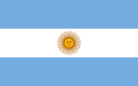
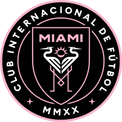

lionel messi was born on june 24 1987 in argentina. At 17 Messi made his competitve debut for Barcelona in october 2004. He gradually established himself as an integral player for the club, and during his first uninterrupted season at age 22 in 2008–09 he helped Barcelona achieve the first treble in Spanish football. This resulted in Messi winning the first of four consecutive Ballon d'Ors, and by the 2011–12 season he set the European record for most goals in a season and established himself as Barcelona's all-time top scorer.
lionel Messi wiki!At 17, he was two years younger than the other players and, at around half their height, he looked even younger. With his floppy hair and boyish air he did not cut an impressive figure. It was impossible to imagine him as a future superstar -- until he got on the ball and all of us suffered a collective jaw drop. The way the ball was tied to his left foot was enough to make sure that everyone was paying attention. But there was so much more -- his awareness of what was happening around him, the calm of his decision making, the clear impression that none of this talent was wasted, that it was all employed in creating a threat to the opposing goal. It did not take long before our secret was out. A few months later he was the star as Argentina won the Under-20 World Cup.
lionel Messi ESPN! Messi, now playing for Inter Miami CF of the MLS, helped his home country win soccer’s biggest event for the first time since 1986, scoring two goals in the final and leading Argentina to a 4-2 win over Kylian Mbappé and France on penalties. Argentina’s captain was also named the tournament MVP. The new series follows up Messi Meets America, Apple’s 2023 look at the star striker’s arrival and first season in the MLS. Inter Miami begins the 2024 regular season also on February 21 with a match against Real Salt Lake.
 lionel Messi biographyLionel Messi won the 2022 FIFA World Cup with Argentina, defeating France in the final. The match went to penalties after a 3-3 draw, with Argentina winning 4-2 in the shootout. This victory marked Argentina's first World Cup win since 1986 and Messi's first World Cup title.
lionel Messi google